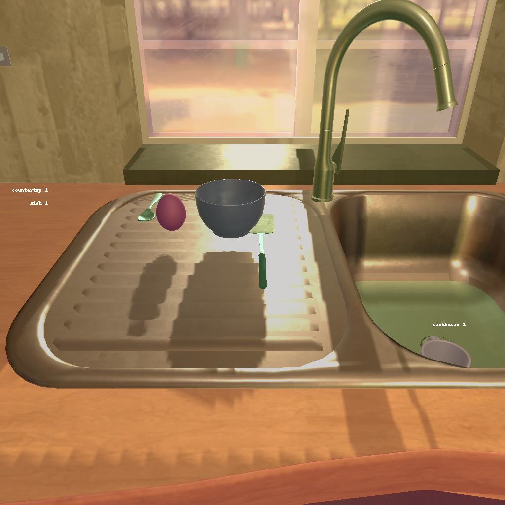

---------------------------------------------------------task: 26---------------------------------------------------------
--------------------------------------------------------------------------------------------------------------------------------------------------------------------
--------------------------------------------------------------------------------------------------------------------------------------------------------------------
Step:--------------------------------------------------------------------------1-------------------------------------------------------------------------------
----------------------------------------
VLM Prompt:
Image1:
Image2:
**Instruction**
1. Analyze the provided image to identify all visible household objects, focusing on those relevant to the task description "find two kettle and put them in cabinet."
2. Use the analysis of the image and the task hint "The agent must find an object of the desired type, pick it up, find the correct location to place it, put it down there, then look for another object of the desired type, pick it up, return to previous location, and put it down there with the other object." to answer the question: what is the most reasonable action in the choices for the task description "find two kettle and put them in cabinet"?
4. Decide and write the answer using the template: The answer is: (i): , where i is the real number. If there is no desired object in the image, search every place based on **Initial Observation** to find the object. And if no one is exactly correct, choose a similar answer.
**Initial Observation**
You are in the middle of a room. Looking quickly around you, you can see countertop (1), coffeemachine (1), cabinet (1-4), drawer (1-8), sink (1), sinkbasin (1), garbagecan (1), fridge (1), microwave (1), dresser (1), sidetable (1)
**Answer Choices**
(1): go to countertop 1
(2): go to coffeemachine 1
(3): go to cabinet 1
(4): go to cabinet 2
(5): go to drawer 1
(6): go to sink 1
(7): go to sinkbasin 1
(8): go to cabinet 3
(9): go to garbagecan 1
(10): go to cabinet 4
(11): go to drawer 2
(12): go to fridge 1
(13): go to microwave 1
(14): go to dresser 1
(15): go to sidetable 1
(16): go to drawer 3
(17): go to drawer 4
(18): go to drawer 5
(19): go to drawer 6
(20): go to drawer 7
(21): go to drawer 8
**Answer**
Let's think step by step by following the instructions.
----------------------------------------
----------------------------------------
Original Response:
Firstly, we need to identify if there are any kettles visible in the image provided. Upon examining the image, we do not see any kettles on the countertop, sink, or sinkbasin. Since the task description is "find two kettles and put them in cabinet," we must search for the kettles. According to the Initial Observation, there are several cabinets and drawers in the room that could potentially contain kettles.
The most reasonable action from the choices is to start searching the cabinets, as kettles are typically stored in cabinets rather than drawers or the other listed household objects. Since we do not know which cabinet the kettles are in, we should start with the first one and continue the search systematically.
The answer is: (3): go to cabinet 1
----------------------------------------
----------------------------------------
>>> Refine Original VLM Response and Get Pure Action: go to cabinet 1
----------------------------------------
-----------------------------------------------------------------
Running time: 8.615240812301636 seconds
Total Money: 16.592940000000006
-----------------------------------------------------------------
-----------------------------------------------------------------
Text Observation:You arrive at loc 2. The cabinet 1 is closed.
-----------------------------------------------------------------
UNSUCCEED